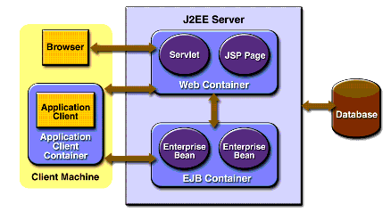

www.netbeans.org
Feedback
java.sun.com
|
Download
www.netbeans.org |
|
API
Feedback java.sun.com |
J2EE Containers
Normally, thin-client multitiered applications are hard to write because they involve many lines of intricate code to handle transaction and state management, multithreading, resource pooling, and other complex low-level details. The component-based and platform-independent J2EE architecture makes J2EE applications easy to write because business logic is organized into reusable components. In addition, the J2EE server provides underlying services in the form of a container for every component type. Because you do not have to develop these services yourself, you are free to concentrate on solving the business problem at hand.
Container Services
Containers are the interface between a component and the low-level platform-specific functionality that supports the component. Before a web component, enterprise bean, or application client component can be executed, it must be assembled into a J2EE module and deployed into its container.
The assembly process involves specifying container settings for each component in the J2EE application and for the J2EE application itself. Container settings customize the underlying support provided by the J2EE server, including services such as security, transaction management, Java Naming and Directory Interface
(JNDI) lookups, and remote connectivity. Here are some of the highlights:
- The J2EE security model lets you configure a web component or enterprise bean so that system resources are accessed only by authorized users.
- The J2EE transaction model lets you specify relationships among methods that make up a single transaction so that all methods in one transaction are treated as a single unit.
- JNDI lookup services provide a unified interface to multiple naming and directory services in the enterprise so that application components can access naming and directory services.
- The J2EE remote connectivity model manages low-level communications between clients and enterprise beans. After an enterprise bean is created, a client invokes methods on it as if it were in the same virtual machine.
Because the J2EE architecture provides configurable services, application components within the same J2EE application can behave differently based on where they are deployed. For example, an enterprise bean can have security settings that allow it a certain level of access to database data in one production environment and another level of database access in another production environment.
The container also manages nonconfigurable services such as enterprise bean and servlet life cycles, database connection resource pooling, data persistence, and access to the J2EE platform APIs described in section J2EE 1.4 APIs. Although data persistence is a nonconfigurable service, the J2EE architecture lets you override container-managed persistence by including the appropriate code in your enterprise bean implementation when you want more control than the default container-managed persistence provides. For example, you might use bean-managed persistence to implement your own finder (search) methods or to create a customized database cache.
Container Types
The deployment process installs J2EE application components in the J2EE containers illustrated in Figure 1-5.

Figure 1-5 J2EE Server and Containers
J2EE server
The runtime portion of a J2EE product. A J2EE server provides EJB and web containers.
Enterprise JavaBeans (EJB) container
Manages the execution of enterprise beans for J2EE applications. Enterprise beans and their container run on the J2EE server.
Web container
Manages the execution of JSP page and servlet components for J2EE applications. web components and their container run on the J2EE server.
Application client container
Manages the execution of application client components. Application clients and their container run on the client.
Applet container
Manages the execution of applets. Consists of a web browser and Java Plug-in running on the client together.
|
Download
www.netbeans.org |
|
API
Feedback java.sun.com |
All of the material in The J2EE(TM) 1.4 Tutorial is copyright-protected and may not be published in other works without express written permission from Sun Microsystems.